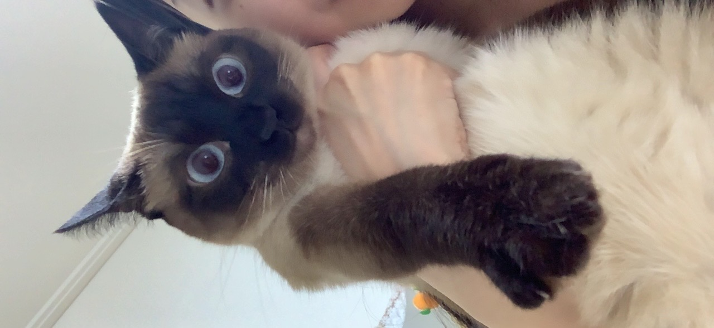

나는 연탄이
I'M YEONTANI
내 이름은 이연탄
연탄이 일상
연탄이와 집사들
내 이름은 이연탄

반가워! 난 연탄이
안녕! 내 이름은 이연탄,이씨가문 막내라냥
내가 좋아하는건 폭신한 이불, 츄르, 집사들이다냥
나는 고양이계의 여왕이라고 불리는
샴고양이다냥 ^-ㅅ-^
그리고 2017년 08월 15일 광복절에 태어났는데, 집사놈이 이름을 광복이라고 지으려고 했다지 뭐냥
그래도 의미있는 이름이라서 좋다냥 -ㅅ-!